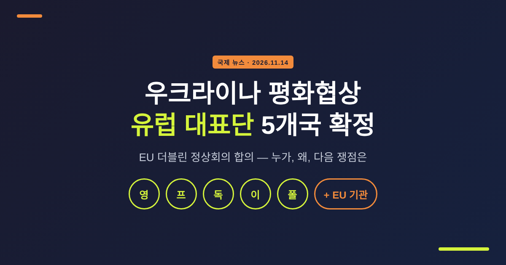
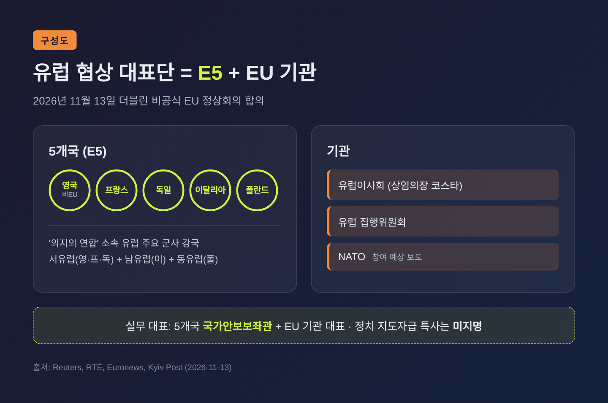
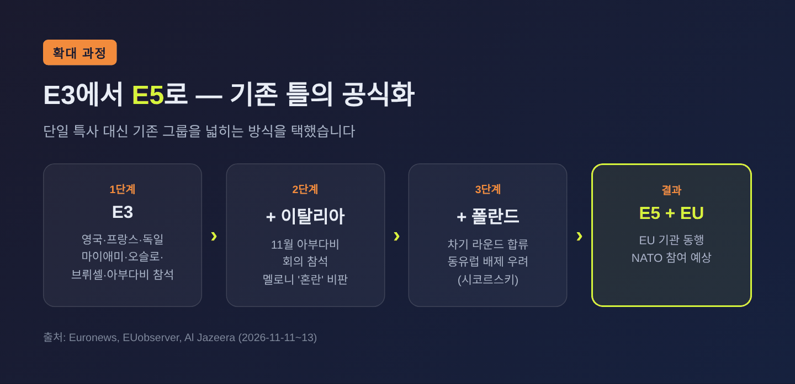
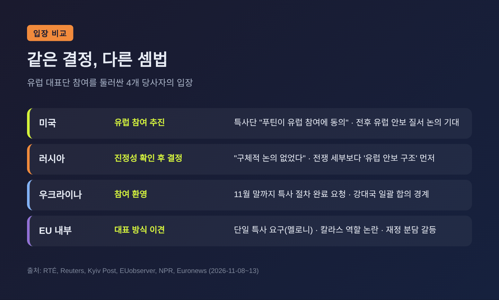
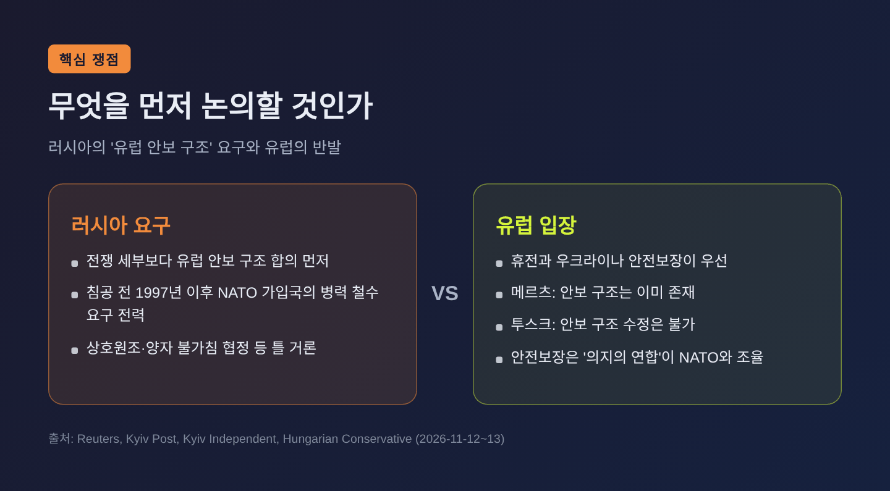
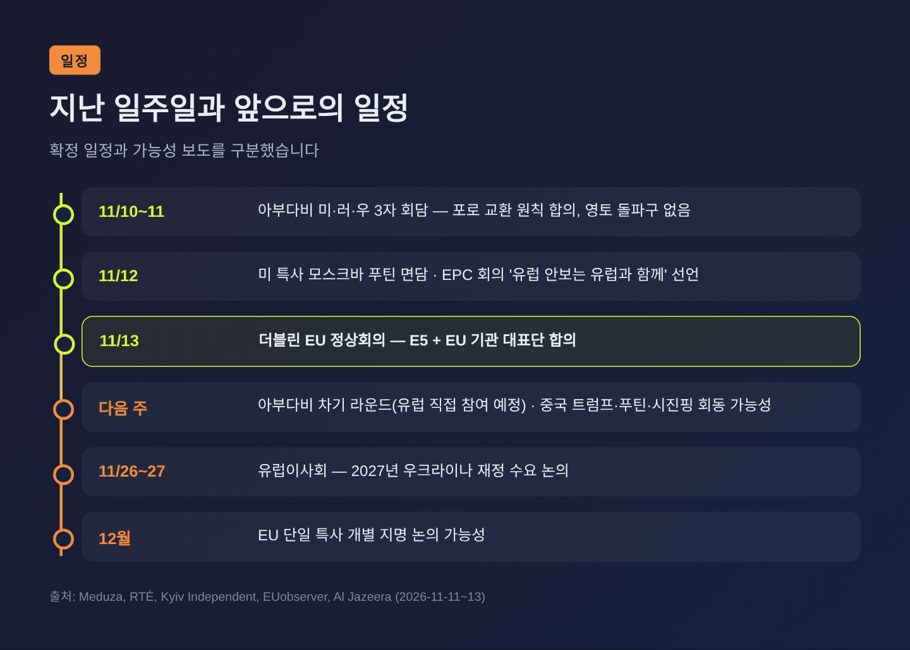

우크라이나 평화협상 유럽 대표단 5개국 확정, 선정 배경과 쟁점

이번 글에서는 EU가 11월 13일 더블린에서 합의한 우크라이나 평화협상 '유럽 대표단' 구성을 정리해 보겠습니다. 누가 들어갔는지, 왜 이렇게 정해졌는지, 그리고 미국·러시아·우크라이나가 각각 어떻게 받아들였는지를 차례로 살펴봅니다.
세 줄 요약
- EU 정상들은 영국·프랑스·독일·이탈리아·폴란드 5개국(E5)과 EU 기관이 함께 유럽을 대표하기로 합의했습니다.
- 미국은 "푸틴이 유럽 참여에 동의했다"고 밝혔지만, 크렘린은 "유럽의 진정성부터 보겠다"며 확답을 미뤘습니다.
- 대표단은 정해졌지만 '단일 특사'는 여전히 공석이고, 러시아가 내민 '유럽 안보 구조' 의제가 다음 쟁점입니다.
■ 무슨 일이 있었나 — 더블린에서 나온 '유럽 팀'
11월 13일 금요일, 아일랜드 더블린에서 비공식 EU 27개국 정상회의가 끝났습니다. 안토니우 코스타 유럽이사회 상임의장은 폐막 기자회견에서 유럽 협상팀 구성을 발표했습니다.
팀은 두 축입니다. 하나는 영국·프랑스·독일·이탈리아·폴란드 5개국, 다른 하나는 유럽이사회와 집행위원회 같은 EU 기관입니다. 영국은 EU 회원국이 아니지만, 유럽의 주요 군사 강국이라는 이유로 포함됐습니다. Euronews와 Reuters는 NATO도 함께 대표될 것으로 전했습니다.
실제로 테이블에 앉을 사람은 정상이 아닙니다. EU 관리들에 따르면 5개국의 국가안보보좌관과 EU 기관 대표가 실무 협상에 나설 가능성이 높습니다(Reuters, Bloomberg 인용 Kyiv Post). 정치 지도자급 대표는 아직 지명되지 않았습니다.
코스타 의장은 "유럽은 하나의 분명하고 단결된 목소리를 내야 한다"고 말했습니다. 또 이 구성을 "결국 팀으로 하는 일"이라고 표현했습니다. 미국 특사가 두 명, 우크라이나 대표단이 서너 명인 것처럼 작은 팀이 오히려 정상적이라는 설명도 덧붙였습니다(RTÉ).

■ 왜 중요한가 — '메뉴'가 될 것인가, '손님'이 될 것인가
유럽이 이 문제에 매달린 이유는 단순합니다. 미국 주도의 미·러·우 3자 회담이 유럽을 빼고 진행되면, 유럽 안보에 직결되는 결정이 유럽 없이 내려질 수 있기 때문입니다(Al Jazeera).
10월 말까지만 해도 사정은 어수선했습니다. FT 보도에 따르면 미국과 우크라이나는 영·프·독 '트로이카'를 유력한 유럽 대표로 검토했지만, 다른 나라들의 반발이 예상됐습니다. 한 유럽 외교관은 "대표를 고르기 전에 먼저 의자부터 있어야 한다"고 토로하기도 했습니다(Meduza, FT 인용).
러시아는 이 틈을 놓치지 않았습니다. 페스코프 크렘린 대변인은 11월 6일 유럽이 "누가 대변할지조차 정하지 못했다"고 꼬집었습니다(Reuters). 미국 측 쿠슈너 특사도 아부다비 회담 뒤 "유럽이 자신들을 대변할 한 사람을 정할 수 있다면, 러시아가 유럽을 끼워 주는 것보다 더 큰 성과"라는 취지로 말했습니다(Al Jazeera).
예전엔 유럽이 '누가 나설지'를 두고 서로 눈치를 봤습니다. 이제는 적어도 명단이 생겼습니다. 협상장 밖에서 결과를 통보받는 처지에서, 안에서 목소리를 낼 최소한의 틀을 갖춘 셈입니다.
■ 선정 방식 — 기존 틀의 공식화, 그리고 동유럽의 몫
코스타 의장은 별도의 선정 기준을 공개하지 않았습니다. 다만 보도를 종합하면 이번 결정은 새로 짠 판이라기보다 이미 굴러가던 틀을 공식화한 것에 가깝습니다.
Euronews에 따르면 영·프·독(E3)과 EU 기관, NATO는 그동안 마이애미·오슬로·브뤼셀·아부다비 회의에 참석해 왔습니다. 이 구성 자체가 협상을 중재하는 미국이 사실상 만들어 온 형태입니다. 메르츠 독일 총리도 "E3 형식은 매우 효과적이었다"고 평가했습니다.
여기에 두 나라가 더해졌습니다.
- 이탈리아: 이미 이번 주 아부다비 회의에 참석했습니다. 멜로니 총리는 유럽 목소리의 '혼란'을 비판하며 단일 특사를 요구해 왔습니다.
- 폴란드: 다음 라운드부터 합류합니다. 시코르스키 외무장관은 "서유럽이 동유럽 머리 위에서 러시아와 거래하는 것"을 가장 원치 않는다고 말한 바 있습니다(EUobserver).
결국 정상들은 멜로니가 원한 '단일 특사' 대신, 기존 그룹을 넓히는 쪽을 택했습니다. 서유럽 중심의 E3에 남유럽과 동유럽을 하나씩 더해 대표성을 보강한 구조로 읽힙니다. 이 해석은 보도 내용을 바탕으로 한 필자의 판단입니다.

■ 각국의 셈법 — 미국·러시아·우크라이나·유럽
같은 결정을 두고 당사자들의 반응은 꽤 달랐습니다.
미국은 유럽 참여를 밀어 왔습니다. 위트코프·쿠슈너 특사는 11월 12일 모스크바에서 푸틴 대통령을 만난 뒤 "푸틴이 유럽 참여에 동의했다"고 밝혔습니다(RTÉ, Kyiv Post). 쿠슈너는 유럽이 들어오면 "전후 유럽 안보 질서 전반"을 다룰 수 있다고도 했습니다.
러시아는 문을 반쯤만 열었습니다. 크렘린은 13일, 유럽이 진정으로 평화에 기여하려는 의도를 보인다면 참여를 환영하겠다고 했습니다(Reuters). 그러면서도 페스코프 대변인은 구체적 논의는 없었고, 확대 형식은 유럽의 "진정한 의도와 준비"를 확인한 뒤 정하겠다고 선을 그었습니다(RTÉ). 러시아는 유럽이 우크라이나를 무장시키는 당사자라 직접 협상에 맞지 않는다는 입장도 유지하고 있습니다(Al Jazeera).
우크라이나는 유럽 참여를 환영하는 쪽입니다. 젤렌스키 대통령은 EU에 11월 말까지 특사 절차를 끝내 달라고 요청했습니다(EUobserver). 트럼프 대통령이 "유럽 전체가 관련될 수 있는" 합의를 언급하자, 1945년 얄타 회담을 거론하며 "위험할 수 있다"고 경계하기도 했습니다(NPR).
유럽 내부에서도 결이 갈렸습니다. 카야 칼라스 EU 외교안보 고위대표는 특사 역할이 자기 권한이라고 주장했습니다. 그는 "러시아가 나를 원치 않는다는 것을 안다"며, 러시아가 강한 상대를 피하려는 것이라고 했습니다. 하지만 코스타 의장은 EU 조약상 대외 대표는 상임의장의 몫이라며 받아들이지 않았고, 폰데어라이엔 집행위원장도 칼라스를 지지하지 않았습니다(Euronews).

■ 아부다비 회담과는 어떻게 이어지나
이번 결정은 11월 10~11일 아부다비 3자 회담의 연장선에 있습니다. 그 회담에서 러시아와 우크라이나는 대규모 포로 교환에 원칙적으로 합의했지만, 영토와 휴전에서는 돌파구를 찾지 못했습니다(Meduza, Reuters).
유럽은 이미 그 자리에 있었습니다. Reuters에 따르면 영국·프랑스·독일·이탈리아와 EU 대표가 아부다비에 참석했습니다. EUobserver는 EU·NATO 관리 최소 7명, 우크라이나 측 약 6명, 러시아 측 11명이 자리했다고 전했습니다.
하지만 '참석'과 '참여'는 다릅니다. 러시아 수석대표 메딘스키는 유럽 측과 소통하지 않았고 "어떤 자격으로 와 있는지 모르겠다"고 말했습니다(Meduza). 이번 더블린 합의는 이 모호한 지위를 정리하려는 시도로 볼 수 있습니다. 젤렌스키 대통령과 쿠슈너 특사는 다음 주 아부다비 차기 라운드에 유럽 대표단이 직접 참여한다고 확인했습니다(RTÉ).
■ 핵심 쟁점 — 안전보장인가, '유럽 안보 구조'인가
진짜 갈등은 의제에 있습니다.
러시아는 전쟁의 세부 사항보다 먼저 유럽 안보 구조 전반을 합의하자고 요구합니다(Reuters). 러시아는 2022년 침공 전에도 1997년 이후 NATO에 가입한 나라들에서 NATO 병력을 빼라고 요구했고, NATO는 이를 거부했습니다. 러시아 외무부 측은 상호원조, 상대의 적을 돕지 않기, NATO 국가들과의 양자 불가침 협정 같은 틀을 거론했습니다(Hungarian Conservative).
유럽 지도자들은 이 의제를 강하게 경계합니다.
- 메르츠 독일 총리: "우크라이나 없이 우크라이나를, 유럽 없이 유럽을 논의하지 않는다." 유럽에는 이미 안보 구조가 있어 논의할 필요가 없다고 했습니다.
- 투스크 폴란드 총리: 유럽 안보 구조의 수정은 있을 수 없으며, 그것이 바로 푸틴이 원하는 것이라고 했습니다.
- 쿨베르그스 라트비아 총리: 이런 논의를 "함정"이라고 불렀습니다.
- 칼라스 고위대표: 안보 구조 논의가 휴전이라는 급한 과제에서 시선을 돌릴 수 있다고 우려했습니다.
반면 우크라이나에 대한 안전보장은 '의지의 연합'이 NATO와 조율해 다루기로 했습니다(Kyiv Independent). 앞서 11월 12일 유럽정치공동체(EPC) 회의에서는 유럽 안보에 관한 문제는 유럽이 참여한 가운데 결정해야 한다는 선언에 40여 개국이 서명했습니다. 서명국 수는 Reuters가 40개국, RTÉ가 41개국으로 보도해 차이가 있습니다.

■ 남은 균열 — 특사 공석과 돈 문제
대표단은 정해졌지만, 풀리지 않은 문제도 분명합니다.
첫째, 단일 특사는 아직 없습니다. 스투브 핀란드 대통령, 드라기 전 이탈리아 총리, 멜로니, 코스타, 칼라스 등이 거론됐지만 개별 지명은 12월 정상회의로 넘어갈 가능성이 큽니다(Hungarian Conservative, EUobserver).
둘째, 재정 분담을 둘러싼 갈등입니다. RTÉ에 따르면 체코·헝가리·슬로바키아·불가리아는 우크라이나 재정 지원 분담을 거부하고 있습니다. 메르츠 총리는 독일의 EU 장기예산 기여를 모든 회원국의 우크라이나 지원과 연계하자고 제안했습니다.
참고로 헝가리 총리는 이제 오르반이 아닙니다. 2026년 4월 총선 이후 5월 취임한 마자르 페테르 총리는 우크라이나 EU 가입 1차 협상 클러스터 개방은 허용했지만, 나머지 단계에는 유보적입니다(Euronews). 이번 5개국 결정에 대한 헝가리의 공식 반응은 확인되지 않았습니다.
■ 전망 — 다음 몇 주가 시험대
가까운 일정은 이렇습니다.
- 다음 주: 아부다비 차기 라운드, 유럽 대표단 직접 참여 예정
- 다음 주: 중국에서 트럼프·푸틴·시진핑 회동 가능성 — 메르츠는 트럼프에게 "깜짝 발표는 없어야 한다"고 요청
- 11월 26~27일: 유럽이사회, 2027년 우크라이나 재정 수요 논의
- 근시일: 집행위의 제22차 대러 제재 패키지, 2027년 약 700억 유로 재정 공백 해소안 제안

필자의 판단으로는 세 가지가 관건입니다. 러시아가 유럽을 실제 협상 상대로 받아들일지, 유럽이 '안보 구조' 의제에 끌려가지 않을지, 그리고 미·러 정상 간 거래가 유럽을 앞지르지 않을지입니다. 일부 유럽 정상들 사이에서 '제2의 앵커리지(알래스카 회담) 순간'을 걱정하는 목소리가 나온 것도 그래서입니다(Al Jazeera).
물론 한계도 분명합니다. 5개국 체제는 단일 창구보다 조율 비용이 큽니다. 또 대표단 밖에 남은 나라들의 반응은 아직 충분히 드러나지 않았습니다.
■ 한국에 주는 시사점
멀리 떨어진 이야기 같지만, 구조는 낯설지 않습니다. 동맹국이 상대국과 직접 협상할 때, 그 결과에 가장 큰 영향을 받는 당사자가 테이블 밖에 남을 수 있다는 점입니다. 유럽이 "유럽 없이 유럽을 논의하지 않는다"는 원칙을 세우고 대표 구성을 서두른 과정은, 한반도 문제에서 한국이 협상의 '주체'로 남기 위해 무엇을 준비해야 하는지 되묻게 합니다. 또한 우크라이나 협상 결과는 유럽의 방위비·재정 부담과 대러 제재 방향에 영향을 주는 만큼, 방산·에너지 분야에도 간접적으로 이어질 수 있습니다. 이 부분은 필자의 해석입니다.
정리하면 이렇습니다. 유럽은 이번에 협상장에 들어갈 명단을 갖췄지만, 무엇을 말할지에 대한 합의는 이제부터입니다.
"자리를 얻는 것과 목소리를 내는 것은 다른 일입니다."
유럽이 그 차이를 메울 수 있겠냐고 물으신다면, 다음 주 아부다비가 첫 번째 답을 줄 것이라고 말씀드리겠습니다.
출처
- Al Jazeera (2026-11-13)
- Reuters via Yahoo News (2026-11-13)
- RTÉ (2026-11-13)
- Kyiv Independent (2026-11-13)
- Euronews via Yahoo (2026-11-13)
- Kyiv Post (2026-11-13)
- EUobserver (2026-11-11)
- Meduza (2026-11-11)
- NPR (2026-11-08)
- Hungarian Conservative (2026-11-12)
#우크라이나평화협상 #유럽대표단 #E5 #EU정상회의 #코스타 #아부다비회담 #유럽안보 #국제뉴스